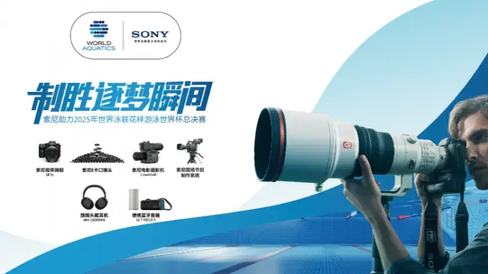
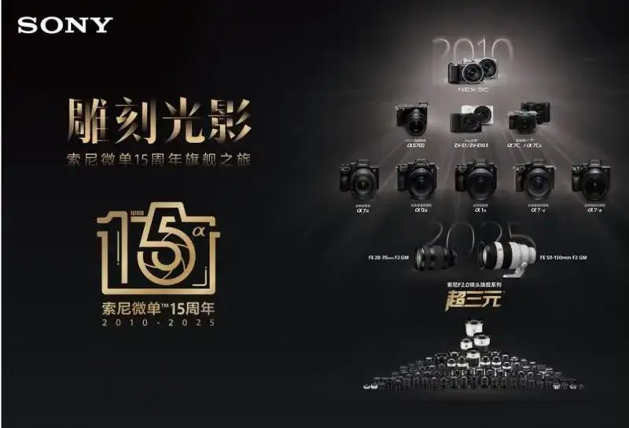
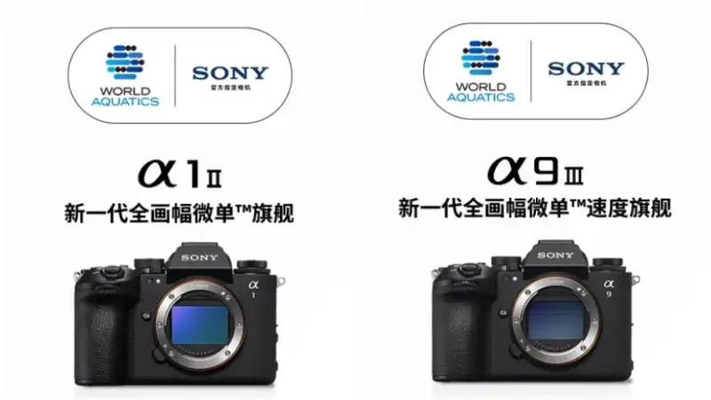
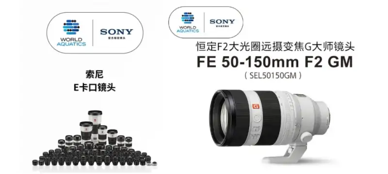
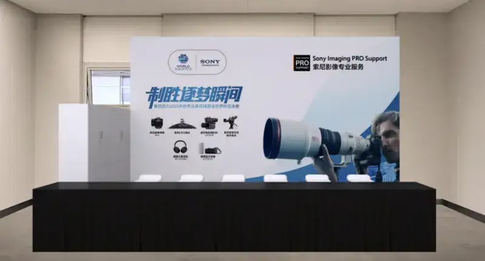

In 2024, Sony and World Aquatics signed a long-term agreement, becoming the official technology partner of World Aquatics series events from 2024 to 2028. From June 13 to 15, 2025, the World Aquatics Artistic Swimming World Cup Super Final will be held at the Xi an Olympic Sports Center Swimming and Diving Hall. As part of this strategic partnership, Sony will draw on its strengths in imaging and digital technology. It will support core areas such as broadcast and photo coverage. Through Sony Imaging PRO Support, it will give on-site photojournalists equipment and professional help, so they can accurately record moving moments of athletes chasing their dreams and bring viewers a visual feast of both beauty and tension.

Sony supports the 2025 World Aquatics Artistic Swimming World Cup Super Final
Flagship imaging gear freezes the highlight moments of artistic swimming
This year marks the 15th anniversary of Sony mirrorless cameras. For fifteen years, Sony has driven the mirrorless system forward through technical innovation. It has witnessed and taken part in the imaging of many international sports events, helping photographers freeze one highlight moment after another.

A family photo of classic Sony mirrorless products for the 15th anniversary
Artistic swimming combines spectacle with technical difficulty. It places high demands on focus tracking, burst speed, and handling light over water. At this event, the two flagship mirrorless cameras, the Alpha 1 II and the Alpha 9 III, together with a high-quality lens system, give photographers an efficient and flexible imaging solution.

Product images of the mirrorless flagship Alpha 1 II and the speed flagship Alpha 9 III
The mirrorless flagship Alpha 1 II balances high resolution and high speed. It has about 50.1 effective megapixels and supports about 30 frames per second with pre-shot, so it freezes high-difficulty moves such as elegant spins in high quality. The speed flagship Alpha 9 III, Sony new full-frame speed flagship, has a global shutter sensor. It supports about 120 frames per second with no blackout and a pre-shot function that records about one second before the shutter is pressed, to capture key moves such as formation changes and underwater synchronization.
Both cameras use an AI processing chip. They offer real-time recognition and focus tracking, accurately detecting the body and the eyes. In fast action, they still clearly capture the athlete expression and the details of the move, which brings high efficiency and a high success rate to imaging.
In lenses, Sony has built an E-mount system of 80 lenses from ultra-wide to super-telephoto, covering needs from wide record to detail capture at events. The FE 400-800mm F6.3-8 G OSS is Sony first super-telephoto zoom to reach 800mm. Its internal zoom design resists dust and reduces shifts in the lens balance during shooting, for steadier shots. The new FE 50-150mm F2 GM covers three classic portrait focal lengths, 50mm, 85mm, and 135mm. With a constant F2 aperture across the range and strong optics, it delivers at maximum aperture the high resolution and bokeh of a prime lens. This highlights the beauty of the athletes poses and adds more feeling to the frame.

Sony E-mount native lenses and the FE 50-150mm F2 GM super-telephoto
Through its growing imaging system, Sony keeps expanding what professional photography can do. It helps content creators handle varied shooting scenes with ease and vividly pass on the beauty and tension of artistic swimming to every viewer.
A multi-dimensional imaging solution builds the event technical support system
As the official event partner, Sony also gave reliable technical support to broadcast and other key areas of this event. Drawing on its imaging expertise, it helped the event deliver a more exciting, fair, and professional viewing experience.
For broadcast, CCTV deployed an A4 broadcast truck on site for program production. It was equipped with 20 Sony HDC-4300 broadcast system cameras and an XVS-9000 switcher. Using advanced high-speed imaging, they clearly record ultra-fast action and aim to show more exciting moments to viewers, which greatly lifts the overall viewing experience. Through multi-camera coordination and high-definition output, Sony professional imaging system delivers smooth, clear, and immersive broadcast pictures for a more present viewing experience.
Sony Imaging PRO Support protects imaging through the whole event
To better support media at the event, Sony set up a Sony Imaging PRO Support center inside the Xi an Olympic Sports Center Swimming and Diving Hall during the event (June 13 to 15, 2025). It offered registered media technical support such as equipment cleaning, gear loans, and battery replacement, to keep high-intensity shooting running smoothly.
The center carried flagship cameras such as the Alpha 1 II and Alpha 9 III, dozens of G Master lenses including the new FE 50-150mm F2 GM super-telephoto, and a full set of professional gear such as batteries, card readers, and waterproof accessories, so media could borrow what they needed on site.

The Sony Imaging PRO Support center
On-site services:
Gear loans: each registered journalist may borrow up to two camera bodies, with no limit on lenses and accessories as needed. (Subject to gear available at the center.)
Cleaning and maintenance: unlimited on-site cleaning of Sony gear, to keep equipment in good condition.
Battery and charging support: spare batteries and charging on site, so photojournalists can shoot without worry.
* Please note: bring your event registration pass to check in.
Hours and location:
Location: media workspace inside the Swimming and Diving Hall, Xi an Olympic Sports Center, 2020 Aoti Avenue, Baqiao District, Xi an, Shaanxi.
Hours: June 13 to 14, 10:00 to 21:00; June 15, 9:00 to 18:00.
Last return time: 18:00 on June 15.
From track and field to diving and artistic swimming, Sony keeps enabling sports imaging through professional technology. With advanced full-frame mirrorless cameras, a wide E-mount lens range, professional cameras, and broadcast solutions, Sony has become a trusted choice for many international sports events, enabling the capture of highlight moments and the expression of genuine feeling.
As a creative entertainment company built on solid technology, Sony keeps deepening its work in digital sports and sports entertainment. Sony does not only chase leading specs. It focuses on using advanced technology to inspire creators, so creators who love sport can immerse themselves in the beauty of competition and pass on the passion and power that sport brings.
About Sony Corporation
Sony Corporation is a wholly owned subsidiary of the Sony Group, responsible for the Entertainment, Technology and Services (ET&S) business. Sony mission is to create the future of entertainment together with creators through the power of technology, and to deliver Kando (emotion) to people around the world.
For more about Sony Corporation, visit http://www.sony.net/